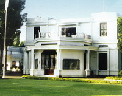

SEJARAH KOTA
Ada beberapa sumber yang dijadikan dasar untuk mengungkapkan asal-usul Salatiga, yaitu yang berasal dari cerita rakyat, prasasti, maupun penelitian dan kajian yang cukup detail. Dari beberapa sumber tersebut Prasasti Plumpungan-lah yang dijadikan dasar asal-usul Kota Salatiga. Berdasarkan prasasti ini Hari Jadi Kota Salatiga dibakukan, yakni tanggal 24 Juli tahun 750 Masehi ditetapkan dengan Peraturan Daerah Tingkat II Nomor 15 Tahun 1995 Tentang Hari Jadi Kota Salatiga.
- Prasasti Plumpungan
- Zaman Penjajahan
- Zaman Kemerdekaan 
Cikal bakal lahirnya Salatiga tertulis dalam batu besar berjenis andesit berukuran panjang 170cm, lebar 160cm dengan garis lingkar 5 meter yang selanjutnya disebut prasasti Plumpungan. Berdasarkan Prasasti yang berada di Dukuh Plumpungan, Kelurahan Kauman Kidul, Kecamatan Sidorejo itu, maka Salatiga sudah ada sejak tahun 750 Masehi, yang ada pada saat itu merupakan wilayah Perdikan. Sejarahwan yang sekaligus ahli Epigraf Dr. J. G. de Casparis mengalihkan tulisan tersebut secara lengkap yang selanjutnya disempurnakan oleh Prof. Dr. R. Ng Poerbatjaraka. Prasasti Plumpungan berisi ketetapan hukum tentang status tanah perdikan atau swatantra bagi suatu daerah yang ketika itu bernama Hampra, yanng kini bernama Salatiga. Pemberian perdikan tersebut merupakan hal yang istimewa pada masa itu oleh seorang raja dan tidak setiap daerah kekuasaan bisa dijadikan daerah Perdikan. Perdikan berarti suatu daerah dalam kerajaan tertentu yang dibebaskan dari segala kewajiban pembayaran pajak atau upeti karena memiliki kekhususan tertentu. Dasar pemberian daerah perdikan itu diberikan kepada desa atau daerah yang benar-benar berjasa kepada seorang raja.
Pada zaman penjajahan Belanda telah cukup jelas batas dan status Kota Salatiga, berdasarkan Staatblad 1917 No. 266 mulai 1 Juli 1917 didirikan Stood Gemente Salatiga yang daerahnya terdiri dari 8 desa. karena dukungan faktor geografis, udara sejuk dan letaknya sangat strategis, maka Salatiga cukup dikenal keindahannya di masa penjajahan Belanda.
Kota Salatiga adalah Staat Gemente yang dibentuk berdasarkan Staatblad 1923 No. 393 yang kemudian dicabut dengan Undang-Undang No. 17 tahun 1995 tentang Pembentukan Daerah-Daerah Kecil Dalam Lingkungan Provinsi Jawa Timur, Jawa Tengah dan Jawa Barat. Ditinjau dari segi administratif pemerintah dikaitkan dengan kondisi fisik dan fungsi Kotamadya Daerah Tingkat II, keberadaan Daerah Tingkat II Salatiga yang memiliki luas 17,82 km dengan 75% luasnya merupakan wilayah terbangun adalah tidak efektif. Berdasarkan kesadaran bersama dan didorong kebutuhan areal pembangunan demi pengembangan daerah, muncul gagasan mengadakan pemekaran wilayah yang dirintis tahun 1983. Kemudian terealisir tahun 1992 dengan terbitnya Peraturan Pemerintah No. 69 tahun 1992 yang menetapkan luas wilayah Salatiga menjadi 5.898 Ha dengan 4 Kecamatan yang terdiri dari 22 Kelurahan. Berdasarkan amanat Undang-Undang No. 22 tahun 1999 Tentang Pemerintahan Daerah, Kotamadya Daerah Tingkat II Salatiga berubah penyebutannya menjadi Kota Salatiga.